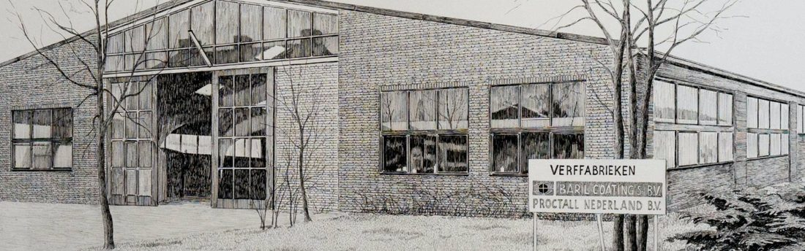
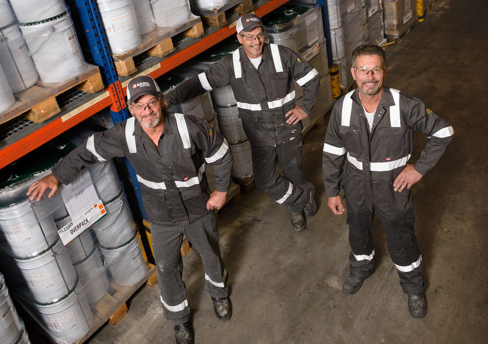
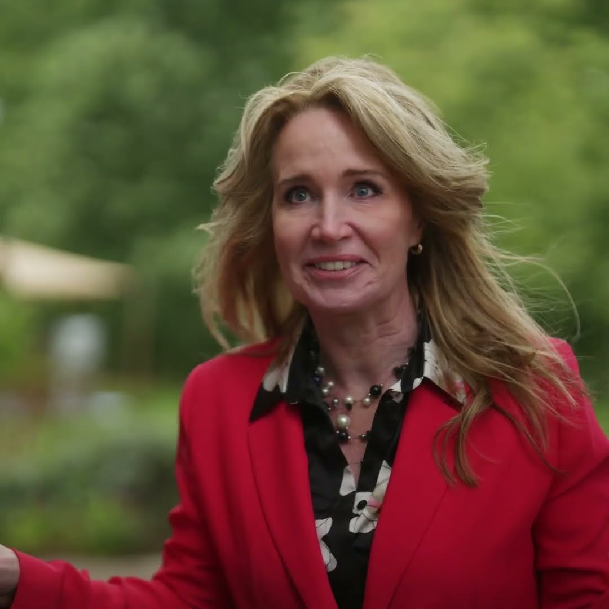

Our story · Since 1982
From a shed in
Moerkapelle
Baril started in 1982 as a small paint maker in Moerkapelle — a handful of committed people in a shed. Four decades on, it is an international coatings producer with plants in the Netherlands and the United States, still led by the Duijghuisen & Harmon families. The constant: the courage to make different choices, with responsible enterprise at its core.

Family-run, by conviction
The Duijghuisen & Harmon families dare to choose differently — and where it is financially sound, they choose sustainable: cleaner factories, safer workplaces, an electric and hybrid fleet. Our greatest capital is a committed, driven team — accessible, honest and involved.
A world player, close to home
From one shed to production in the Netherlands and the US — carried worldwide by local distributors across Europe and North America. We help customers protect their objects durably while shrinking their global footprint.

- 1982Founded on 12 November in Moerkapelle
- 1989Move to a new-built plant in 's-Hertogenbosch
- 2000Management buy-out by Geert Duijghuisen and Hans Broeders †
- 2002Runner-up, BOV Trophy (Beste Ondernemers Visie) — People Planet Profit category
- 2005Baril Polska founded with the brothers Ryszard & Krzysztof Tkacz and Krzysztof Krupa
- 2006Baril USA founded with the Harmon family — today run by Dave Harmon and his children · CO₂ footprint monitoring begins
- 2007Acquisition of Farball Coatings · production expanded with a waterborne plant in Etten-Leur
- 2008Baril Romania founded with George Gramaticu and Iulian Pastia
- 2009Dutch patent for DCC (DualCure) technology
- 2013Biobased raw materials adopted as a core value · biobased trade paints · acquisition by Baril Group
- 2015DCC patented in the EU, USA and Canada · Best Managed Company
- 2016First USDA & EU Ecolabel certified biobased architectural paints
- 2017Geert Duijghuisen succeeded by his sons Teun and Jeroen Duijghuisen as owner-directors · new laboratory in 's-Hertogenbosch · solar roofs in Etten-Leur and 's-Hertogenbosch
- 2019Baril Academy launched · SGA Innovation Award for TiO₂-free wall paint
- 2021Start of the transition to 100% renewable raw materials · winner, Golden Circle Award
- 2023802 BIO & 803 BIO — the first biobased epoxy coatings of industrial quality
- 2024Winner, Brabant Innovation Award · host of the Barinewables event — bringing the entire international value chain of industry peers together to accelerate the transition to renewable raw materials

Watch the aftermovie ↗ - 2025B Corp Certified — among the first protective-coatings makers worldwide · KVK Circular Innovation Award (Chemistry) · Groene Pluim Award
Mission
To offer sustainable coating solutions to our customers and stakeholders — on the way to becoming the greenest paint company in the Netherlands.
Vision
A one-planet philosophy, anchored in our DNA: what we put in, we want to get back out. Every product line converts to biobased raw materials — 100% recoverable is the goal.
How
Thin-layer technology, biobased and waterborne chemistry, low-emission plants, and active work on the UN Sustainable Development Goals — proven in projects like Bright Coatings.